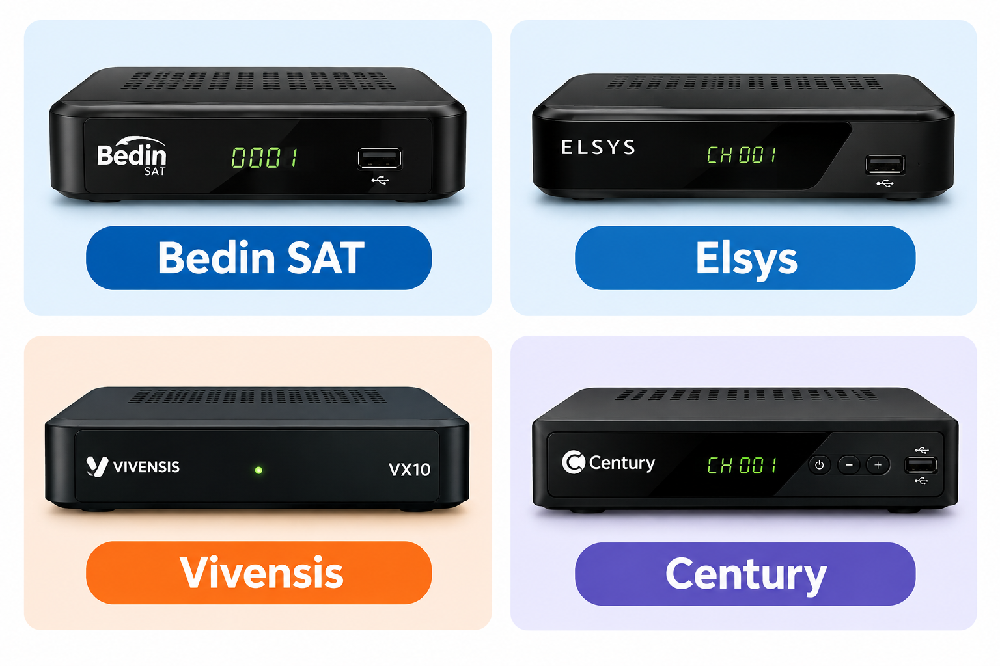
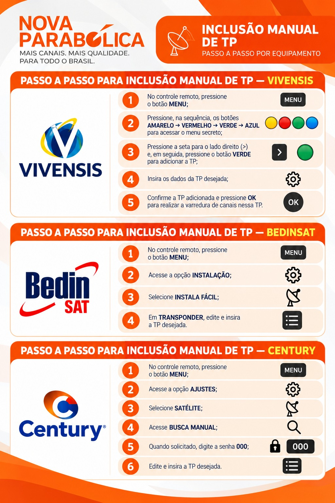

GUIA DE PROCEDIMENTOS
Procedimento e informações do guia
Marcas de receptores disponíveis no 43W
Procedimento e informações do guia

Versão dos softwares dos equipamentos
Procedimento e informações do guia
Bedin (B9900s) – 0.0.6.3
Elsys (Satmax 5) – V10.11.4.31
Elsys (Satmax 6) – 5.0.0.70
Vivensis (VX10) – V60 ou V61
Vivensis (VX Smart) – C2.2.4
Vivensis (VX Gamer/demais) – V3
Century (Midiabox SE-2) – 3.41.01
Century (Midiabox HDTV B7) – V4.11
Century (Midiabox HDTV B8) – Versão única
Como validar a versão do software caso o antenista não saiba:
BedinSAT: Menu → Ferramentas → Informações
Elsys (Satmax 5): Menu → Configurações → Sistema → Informações
Elsys (Satmax 6): Menu → Configurações → Informações → Informações do sistema
Vivensis (VX10): Menu → Ajustes → Informações
Vivensis (VX Smart): Configurações ⚙️ → Preferências do dispositivo → Sobre → Versão
Vivensis (VX Gamer/demais): Menu → Configurações → Informações
Century (Midiabox SE-2): Menu → INFORMAÇÕES → INFORMAÇÕES → Versão S/W
Century (Midiabox HDTV B7): Menu → INFORMAÇÕES
Century (Midiabox HDTV B8): MENU → INFORMAÇÕES → INFORMAÇÃO → Versão do Software.
Como inserir a TP manual
Passo a passo para inclusão manual de TP nos equipamentos

Recovery via OTA
Procedimento e informações do guia
- 1° PASSO:
🔹 Desligar o receptor da tomada🔹 Pressione o botão (CH-) no receptor.
- 2° PASSO:
🔹 Sem tirar o dedo do botão(CH-).🔹 Ligue o receptor novamente na tomada.
- 3° PASSO:
🔹 Espere aparecer a tela com o logo.🔹 Solte o botão CH-.🔹 Quando aparecer a tela de informações.🔹 Preencha com os dados abaixo, corretamente:👉 Configuração B1 - SKY✅ Frequência Intermediária: 1760✅ Polarização: Horizontal✅ Taxa de Símbolo: 30000✅ Porta DiSEqC1.0: 1✅ 22K: Desligado✅ Baixar P/D: 06001
- 4° PASSO:
🔹 Me mande uma foto da tela informações !!🔹 Após concluir a configuração.🔹 Aperte o botão Iniciar Atualização !!🔹 Aguarde e informe o que aconteceu no processo
Recovery Vivensis
Procedimento e informações do guia
Baixe o arquivo aqui: SKY_VX20_240719_SVN4770_V60.udl
Coloque o arquivo sem mudar o nome na raiz do pen drive.
Com o aparelho desligado, coloque o pen drive (com o arquivo) e aperte a tecla CH+.
Com a tecla CH+ apertada, ligue o aparelho e espere a tela branca escrita Vivensis aparecer, o aparelho irá atualizar e pronto, só usar novamente.
Cenários prováveis
Procedimento e informações do guia
Troca teste da LNB:
Quando já foi realizado todas as validações: validação de versão do software, taxas de sinais, já foi enviado comando e o receptor está recebendo (validado pelo ASAP LESS) e antes de solicitar a troca da LNB teste solicite um vídeo ao antenista realizando o procedimento de RESET e nova busca de canais (todo o processo precisa ser gravado e enviado para nós do suporte validar). Solicite a troca teste da LNB, mesmo que o antenista informa que as taxas estejam boas ou normais na TV, pode haver alguma falha interna no equipamento, informe ele que a troca é necessária e faz parte da validação.
Erro na ativação pelo site e CHAT:
Em cenários onde o antenista informa que não está conseguindo realizar ativação do equipamento no site pois informa que já está ativado e ao seguir, inserindo cidade e estado apresenta erro, é necessário validar no CHAT (nós do suporte), colocando nosso CPF, apenas para teste, seguir informando o CAID, logo após nome, sobrenome, e-mail e CEP (dados podem ser inventados). O CHAT vai informar que o equipamento não pode ser ativado no CEP e informar o CEP que o equipamento está ativado, dessa forma, você pode validar no ASAP LESS caso tenha registro de ativação antes de 30 dias, vai estar na lista de comandos. Dessa forma pode orientar o antenista que o erro se dá por conta do equipamento estar dentro da regra de 90 dias de ativação e alteração de CEP, sendo possível apenas seguir com CEP informado pelo CHAT ou aguardar para alterar.
Equipamento ligando e desligando:
Caso em que o equipamento está com algum tipo de problema relacionado a hardware, onde ele fica ligando e desligando ou voltando para tela de inicio em equipamentos com sistema android, é orientado realizar o RECOVERY, caso o antenista não consiga após a orientação, pode orientar a procurar a fabricante para melhor suporte, pois o problema é com o equipamento e não com o apontamento. Caso o antenista informe que realizou e não retornou, oriente ele a procurar a fabricante da mesma forma, não tratamos casos de problemas com equipamento.
Recarga não liberada:
Pedido de recarga travado “em andamento loked) Abertura de chamado.
Recarga pré-pago (toda recarga Nova Parabólica precisa terminar com NP) Nesse caso precisa enviar por e-mail para correção da recarga.
Recarga não seguiu hierarquia (cliente possuía uma POP e depois realizou uma TOP, porém, a recarga TOP consta como pendente e a POP está ativa) Nesse caso informe o N2.
Enviando para correção de recarga
Procedimento e informações do guia
Assunto: Recarga SKY em Conta Nova Parabólica - (número da assinatura)
Para: alana.cerqueira@terceiro-sky.com.br
Cópia: raphael.bernardo@vconnection.com.br
Caros, bom dia / boa tarde / boa noite!
Solicitamos apoio para correção do caso abaixo, referente a uma recarga pré-pago aplicada em uma assinatura de Nova Parabólica.
Dados do cliente:
- Assinatura:
- Nome do cliente:
- Canal de venda:
- Recarga a ser substituída:
- Recarga a ser colocada: (deve possuir uma grade de canais o mais próxima possível da originalmente contratada, com valor equivalente ou inferior ao da recarga pré-pago)
- Comprovante de pagamento:
- CRM do antenista e número de celular
Solicitamos, por gentileza, que a recarga aplicada seja substituída pela recarga informada de Nova Parabólica.
Ficamos no aguardo do retorno.
Atenciosamente,
Enviando para abertura de chamado N2
Procedimento e informações do guia
Para o envio e abertura do chamado, é necessário:
- Foto da tela do equipamento com CAID e SCUA (foto do buquê/bouquet do equipamento)
- Conta do cliente caso possua
- Explicar o que está acontecendo no atendimento e o motivo do chamado
- CMR e número do antenista
OBS: Sempre orienta o antenista que o prazo é de até 5 dais úteis e que retornaremos o contato assim que concluído, NUNCA INFORMAR QUE VAI SER ENVIADO PARA CHAMADO OU QUE A ENGENHARIA VAI ATUAR, sempre informar que vai ser realizar uma analise interna por nós.
Ativação de receptor
Procedimentos de ativação — Nova Parabólica 43W
🌐 Ativação pelo site
📌 PONTO PRINCIPAL
- Acessar o site https://www.novaparabolica.com.br/ativar-equipamento.
- Clicar na aba Ativar equipamento.
- Informar CAID e SCUA.
- Não informar o CPF do cliente, pois é a primeira ativação.
- Colocar a cidade e estado em que o equipamento vai ser ativado.
- Clicar na opção Técnico e informar o CPF de antenista para receber pontos no clube, ou selecionar Cliente caso não faça parte do clube.
- Será enviado o comando de ativação, com prazo de até 5 minutos.
- Clicar em Funcionou caso o equipamento já tenha sido liberado.
- Clicar em Finalizar cadastro caso queira realizar o cadastro completo.
📌 PONTO OPCIONAL
- Acessar o site https://www.novaparabolica.com.br/ativar-equipamento.
- Clicar na aba Ativar equipamento.
- Informar CAID e SCUA.
- Informar o CPF do cliente em que está o ponto principal.
- Selecionar a assinatura em que o ponto principal já está ativo.
- Informar os 6 dígitos do código token enviados para o número de celular cadastrado do cliente.
- Será enviado um comando de ativação, com prazo de até 5 minutos para o receptor.
💬 Ativação pelo CHAT
WhatsApp do CHAT Nova Parabólica: +55 11 3003-7156
- Adicione o contato do CHAT Nova Parabólica no WhatsApp e envie um oi.
- Informe o CPF do cliente que vai ficar registrado no equipamento.
- Informe o CAID que vai ser ativado.
- Informe nome.
- Informe sobrenome.
- Confirme o telefone celular.
- Informe o e-mail.
- Informe o CEP que vai ser registrado.
- Informe o número.
📌 PONTO OPCIONAL
- Acesse o CHAT pelo WhatsApp +55 11 3003-7156 e envie um oi.
- Informe o CPF do cliente.
- Selecione a assinatura.
- Selecione um equipamento da conta.
- Na caixa de “Escolha o que você quer fazer pra que eu possa te ajudar. 😉”, selecione Gerenciar equipamentos.
- Selecione a opção 1 - Incluir equipamento como ponto adicional.
- Informe o CAID que vai ser adicionado.
- Selecione a assinatura que o equipamento vai entrar.
- Confirme a informação.
- Informe o CEP que a conta está e finalize.
Reforço de sinal
Procedimentos para normalização do sinal pelo site e pelo CHAT Nova Parabólica
Site:
Reforço de sinal pelo site é realizado quando o cliente já possui ativação do receptor mas optou por não finalizar a criação da conta, utilizando apenas canais abertos.
Acesse o site https://www.novaparabolica.com.br/ativar-equipamento → clique em ativar equipamento → informe CAID e SCUA → não precisa informar CPF do cliente (clique em não informar) → coloque a cidade e estado da ativação (importante ser a mesma cidade e estado da ativação caso esteja dentro dos 90 dias da primeira ativação, caso não esteja, vai apresentar falha ao prosseguir) → na tela de quem está ativando o antenista pode colocar técnico, mas é importante saber que não gera pontos no clube pois já teve sua ativação inicial ou, caso queira, pode clicar em cliente → envio do comando vai ser realizado e tem o prazo de 5 minutos para normalização das imagens.
CHAT Nova Parabólica: Para clientes que já possuem conta gerada (assinatura).
Acesse o CHAT pelo WhatsApp +55 11 3003-7156 → envie um oi → informe o CPF do cliente → selecione a assinatura → selecione o equipamento que vai receber o suporte → na caixa de “Escolha o que você quer fazer pra que eu possa te ajudar. 😉” selecione “receber suporte técnico” → CHAT vai questionar se o equipamento está ligado, selecione sim → ele vai orientar que o equipamento deve ser retirado da tomada e aguardar 10 segundos e ligar novamente → caso o passo anterior não tenha solucionado o problema, clique em não funcionou → ele vai enviar o comando para o receptor com duração de até 5 minutos para normalização.
Como realizar recarga no CHAT
Procedimento e informações do guia
Acesse o CHAT pelo WhatsApp +55 11 3003-7156 → envie um oi → informe o CPF do cliente → selecione a assinatura → selecione o equipamento que vai receber o suporte → Na caixa de “Escolha o que você quer fazer pra que eu possa te ajudar. 😉” selecione “Recarregar” → CHAT vai questionar se o equipamento está ligado, selecione sim → Basta selecionar a recarga desejada (Em caso de compra de opcional, equipamento precisa já ter recarga base ativa).
Como atualizar equipamento Bedin SAT via pen drive
Atualização via pen drive - PROCEDIMENTOS DE ATUALIZAÇÃO VIA USB
Atualização via pen drive - PROCEDIMENTOS DE ATUALIZAÇÃO VIA USB:
1. O pen drive deve estar formatado e conter apenas o arquivo (na raiz do pen drive)
2. Caso haja uma nova atualização, é necessário apagar o arquivo da versão anterior e baixar o novo arquivo
3. O arquivo deve ser copiado para o pen drive com o mesmo nome exato do arquivo baixado no site ( não pode conter numerações entre parenteses )
4. Se o arquivo estiver em uma pasta zipada, ele deve ser extraído.
LINK do software - https://www.bedinsat.com.br/uploads/production_stage_4_allcode.abs
Jogo da Forca NP
Descubra palavras-chave do guia Nova Parabólica 43W
Grade de canais
Grades de canais da Nova Parabólica 43W
Sugestões
Envie sua sugestão ou feedback sobre o guia